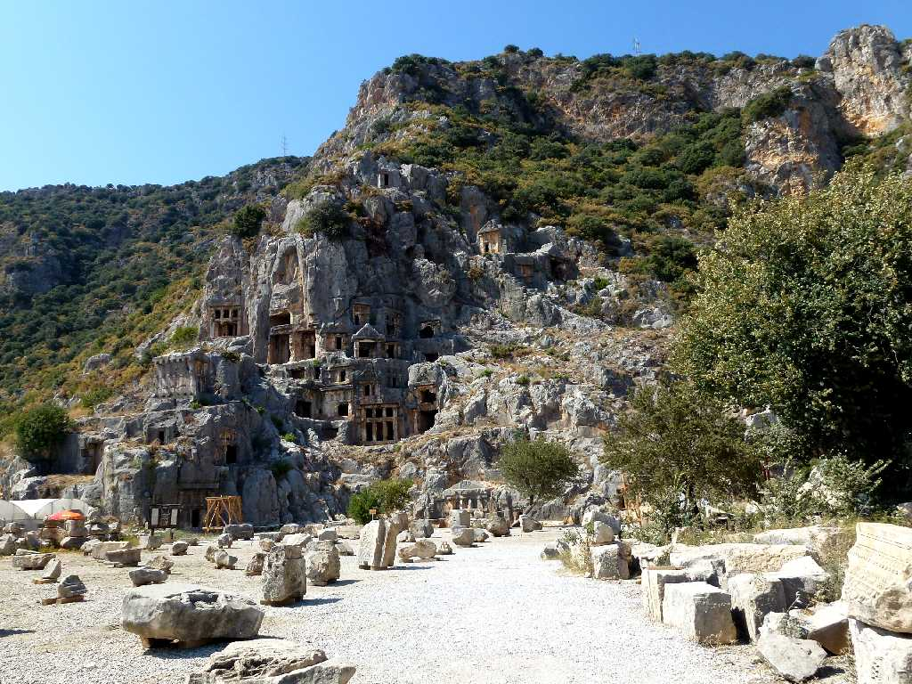
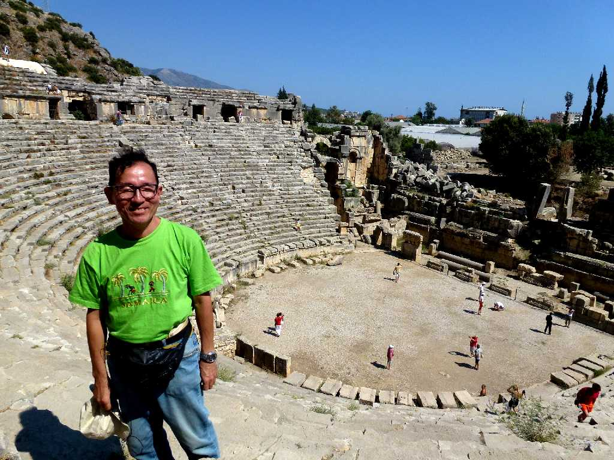
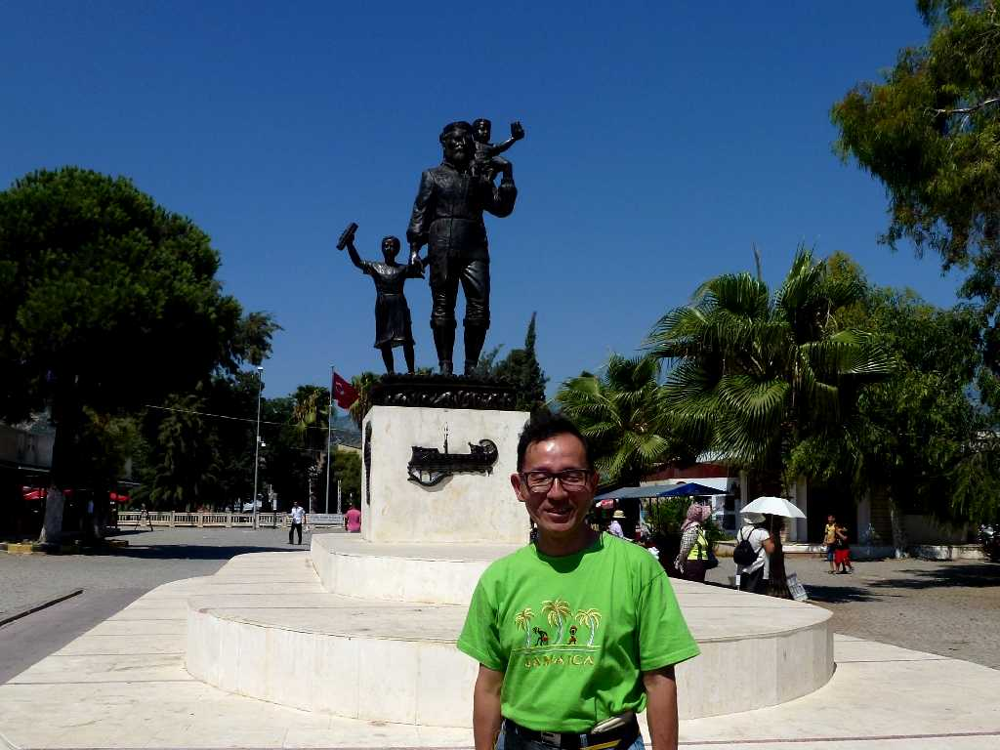

Myra
紀元前５世紀に創られたリキア人の岩窟墓が残るミュラ遺跡

September 6 2011 Theater Myra
ローマ時代に創られたミュラの劇場
Saint Nicholas Church
東方正教会で有名な聖人ニコラウスはサンタクロースで良く知られている ３世紀末にトルコのパタラで生まれミュラに来て聖職者となった ２０世紀にコカコーラ社が創った赤い服にトナカイの広告が世界中に広がりこのイメージが強い

September 6 2011 Saint Nicholas Monument